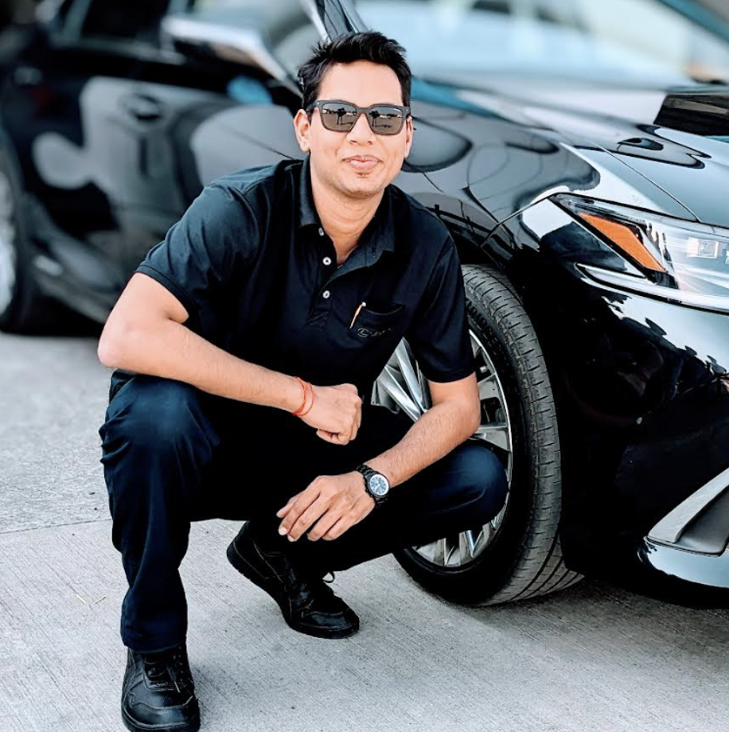

  <!-- About Me Section -->
  <section class="py-5 bg-dark text-light">
    <div class="container">
      <div class="row align-items-center">
        <div class="col-md-6 mb-4 mb-md-0 d-flex align-items-stretch">
          
        </div>
        <div class="col-md-6 d-flex flex-column justify-content-center" style="min-height: 100%;">
          <h2 class="fw-bold">About Me</h2>
          <p class="lead">I'm Arun Holehonnur — a mobility strategist and AI enthusiast. With over a decade of experience at Toyota and an MBA from Georgetown, I’m passionate about transforming the future of transportation using smart, sustainable tech.</p>
          <p class="lead">I created AI4Wheels to explore and share ideas that merge engineering, data, and AI — from electric vehicle optimization to fleet intelligence and more.</p>
          <!--<a href="about.html" class="btn btn-outline-info mt-3">Learn More</a>-->
          <div class="d-flex flex-wrap gap-2 mt-3">
            <a href="about.html" class="btn btn-outline-info">Learn More</a>
            <a href="https://www.linkedin.com/in/arunholehonnur/" target="_blank" class="btn btn-outline-light">LinkedIn</a>
            <a href="contact.html" class="btn btn-outline-warning">Contact</a>
        </div>
      </div>
    </div>
  </section>
